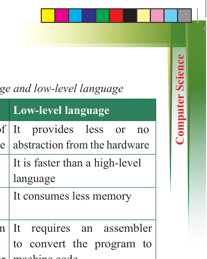
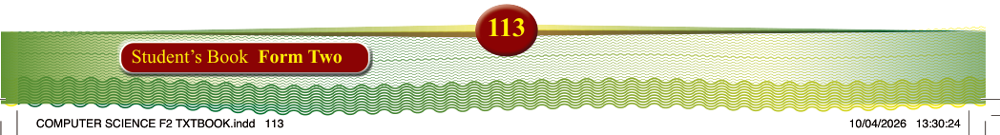

Table 3.3: Differences between high-level language and low-level language
Feature
High-level language
Low-level language
Level of abstraction
It provides a high level of
abstraction from the hardware
It provides less or no
abstraction from the hardware
Execution speed
It is slower than a
low-level language
It is faster than a high-level language
Memory efficiency
It consumes more memory
It consumes less memory
Translation
It requires a compiler or an
interpreter to convert the program into machine code or execute it
It requires an assembler to convert the program to
machine code
Comprehensibility It is easily understandable by
the programmer
It is easily understandable by the computer
Machine dependency
It is machine-independent
It is machine-dependent
Portability
It is portable
It is not portable
Debugging and maintenance
Easy to debug and maintain
It is hard to debug and maintain
Examples
Python, Java, C++, Ruby
Assembly language, machine
code
Generations of programming languages
Programming languages are classified into five generations based on their level of
abstraction and capabilities. Low-level languages belong to the first and second
generations, while high-level languages are categorised into the third, fourth, and fifth
generations. Together, these make up the five generations of programming languages.
First Generation (machine language)
Instructions in machine language are written using binary digits 0s and 1s. These
instructions represent elementary operations, such as adding or subtracting numbers.
Since computers natively understand binary code, programs written in machine
language do not require further translation. However, machine language is difficult
to read and understand because it consists entirely of numeric code. Writing